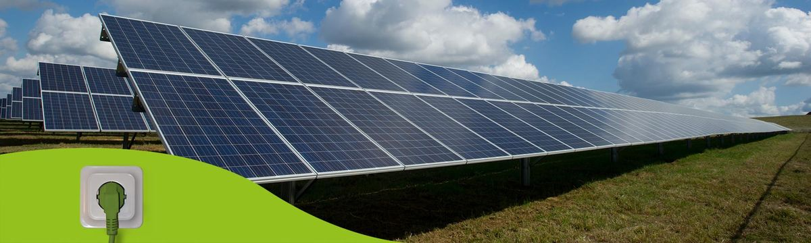

<title>Energieaudit München &amp; Bayern – Ingenieurbüro Bräu</title>
<meta charset="utf-8">
<meta name="viewport" content="width=device-width, initial-scale=1">
<link rel="icon" href="assets/img/favicon-50x50.jpg">
<meta name="description" content="Energieaudits nach DIN EN 16247-1 für nicht produzierende Betriebe in München und ganz Bayern. Über 25 Jahre Erfahrung in Energieberatung.">
<meta name="robots" content="index, follow">
<link rel="canonical" href="https://braeu-ing.de/">
<meta property="og:type" content="website">
<meta property="og:title" content="Energieaudit München &amp; Bayern – Ingenieurbüro Bräu">
<meta property="og:description" content="Energieaudits nach DIN EN 16247-1 für nicht produzierende Betriebe in München und ganz Bayern. Über 25 Jahre Erfahrung in Energieberatung.">
<meta property="og:url" content="https://braeu-ing.de/">
<meta property="og:image" content="https://braeu-ing.de/assets/img/Headerbild_1.jpg">
<meta property="og:locale" content="de_DE">
<meta name="twitter:card" content="summary_large_image">
<link rel="stylesheet" href="assets/css/style.css">
<script type="application/ld+json">
{
  "@context": "https://schema.org",
  "@type": "ProfessionalService",
  "name": "Ingenieurbüro Bräu",
  "image": "https://braeu-ing.de/assets/img/Headerbild_1.jpg",
  "url": "https://braeu-ing.de/",
  "telephone": "+49-160-9309748",
  "email": "info@braeu-ing.de",
  "priceRange": "€€",
  "address": {
    "@type": "PostalAddress",
    "streetAddress": "Leostrasse 7",
    "postalCode": "81375",
    "addressLocality": "München",
    "addressCountry": "DE"
  },
  "areaServed": [
    { "@type": "City", "name": "München" },
    { "@type": "State", "name": "Bayern" }
  ],
  "founder": {
    "@type": "Person",
    "name": "Dirk Bräu"
  },
  "foundingDate": "1999",
  "description": "Energieaudits nach DIN EN 16247-1 und Energieberatung für nicht produzierende Betriebe in München und ganz Bayern.",
  "sameAs": []
}
</script>
<script type="application/ld+json">
{
  "@context": "https://schema.org",
  "@type": "FAQPage",
  "mainEntity": [
    {
      "@type": "Question",
      "name": "Wer ist zu einem Energieaudit verpflichtet?",
      "acceptedAnswer": {
        "@type": "Answer",
        "text": "Nach § 8 EDL-G sind grundsätzlich alle Unternehmen, die keine kleinen und mittleren Unternehmen (KMU) im Sinne der EU-Definition sind, zur regelmäßigen Durchführung eines Energieaudits verpflichtet. KMU sind von der gesetzlichen Pflicht ausgenommen, profitieren aber ebenso von den wirtschaftlichen Einsparpotenzialen eines freiwilligen Audits."
      }
    },
    {
      "@type": "Question",
      "name": "Wie oft muss ein Energieaudit wiederholt werden?",
      "acceptedAnswer": {
        "@type": "Answer",
        "text": "Die gesetzliche Regelung sieht eine Wiederholung des Energieaudits in einem festen, mehrjährigen Turnus vor. Wir informieren Sie im Erstgespräch über die für Ihr Unternehmen maßgeblichen Fristen und behalten diese für Sie im Blick."
      }
    },
    {
      "@type": "Question",
      "name": "Was unterscheidet ein Energieaudit von einem Energiemanagementsystem?",
      "acceptedAnswer": {
        "@type": "Answer",
        "text": "Ein Energieaudit nach DIN EN 16247-1 ist eine punktuelle, umfassende Analyse. Ein Energiemanagementsystem nach ISO 50001 ist ein fortlaufender, organisatorisch verankerter Prozess. Beide Wege können die gesetzliche Pflicht erfüllen."
      }
    },
    {
      "@type": "Question",
      "name": "Welche Unterlagen benötigen Sie von uns?",
      "acceptedAnswer": {
        "@type": "Answer",
        "text": "In der Regel Energierechnungen und Verbrauchsdaten der letzten Jahre, Grundrisse bzw. Anlagenlisten sowie Ansprechpartner für die Begehung."
      }
    },
    {
      "@type": "Question",
      "name": "Was kostet ein Energieaudit?",
      "acceptedAnswer": {
        "@type": "Answer",
        "text": "Der Aufwand hängt von Betriebsgröße, Standortzahl und Komplexität der Energiesysteme ab. Nach einem kostenlosen Informationsgespräch erhalten Sie ein festes, transparentes Angebot ohne versteckte Kosten."
      }
    },
    {
      "@type": "Question",
      "name": "Bieten Sie auch freiwillige Audits für kleine Unternehmen (KMU) an?",
      "acceptedAnswer": {
        "@type": "Answer",
        "text": "Ja. KMU sind zwar von der gesetzlichen Pflicht ausgenommen, profitieren aber ebenso von den wirtschaftlichen Einsparpotenzialen. Ein freiwilliges Audit lohnt sich häufig auch ohne rechtliche Verpflichtung."
      }
    },
    {
      "@type": "Question",
      "name": "Wie schnell können Sie starten?",
      "acceptedAnswer": {
        "@type": "Answer",
        "text": "Ein erstes kostenloses Informationsgespräch lässt sich meist innerhalb wenigen Tagen vereinbaren. Der Start des eigentlichen Audits richtet sich nach Ihrer Verfügbarkeit und der Datenlage."
      }
    },
    {
      "@type": "Question",
      "name": "Muss ich als Geschäftsführung persönlich anwesend sein?",
      "acceptedAnswer": {
        "@type": "Answer",
        "text": "Bei der Auftakt- und Abschlussbesprechung ist Ihre Beteiligung sinnvoll, aber nicht in jedem Fall zwingend. Für die tägliche Abstimmung reicht meist eine benannte Ansprechperson aus."
      }
    },
    {
      "@type": "Question",
      "name": "Sind Sie nur in München tätig?",
      "acceptedAnswer": {
        "@type": "Answer",
        "text": "Nein. Unser Sitz ist München, wir sind aber bayernweit für Unternehmen im Einsatz – für Vor-Ort-Termine ebenso wie ergänzend per Telefon und Video-Call."
      }
    }
  ]
}
</script>

<header class="site-header">
  <div class="wrap">
    <a href="index.html" class="brand">
      <span class="mark">iB</span>
      <span>Ingenieurbüro Bräu<small>Energieberatung &amp; Energieaudit</small></span>
    </a>
    <nav class="main-nav">
      <a href="index.html" class="active">Leistungen</a>
      <a href="din-en-16247-1.html">DIN EN 16247-1</a>
      <a href="ueber-uns.html">Über uns</a>
      <a href="vorgehensweise.html">Vorgehensweise</a>
      <a href="kontakt.html">Kontakt</a>
      <a href="kontakt.html" class="nav-cta">Beratung anfragen</a>
    </nav>
    <button class="nav-toggle" aria-label="Menü öffnen" aria-expanded="false">☰</button>
  </div>
</header>

<main>
  <section class="hero">
    <div class="wrap">
      <div>
        <span class="eyebrow">Energieaudit · DIN EN 16247-1 · §8 EDL-G</span>
        <h1>Energieaudits, die <span class="accent">Kosten senken</span> statt nur Pflicht erfüllen</h1>
        <p class="lead">Wir führen Energieaudits für nicht produzierende Betriebe in München und ganz Bayern durch – schnell, unkompliziert und mit über 25 Jahren Erfahrung. Sie behalten Ihre Kernkompetenzen im Blick, wir kümmern uns um den Rest.</p>
        <div class="btn-row">
          <a href="kontakt.html" class="btn btn-primary">Kostenloses Erstgespräch</a>
          <a href="vorgehensweise.html" class="btn btn-ghost">So gehen wir vor</a>
        </div>
      </div>
      <div class="hero-visual">
        
        <div class="badge">25+ Jahre Erfahrung<span>Seit 1999 · bayernweit tätig</span></div>
      </div>
    </div>
  </section>

  <div class="trust-strip">
    <div class="wrap">
      <span><strong>Seit 1999</strong> · Ingenieurbüro Bräu</span>
      <span><strong>DIN EN 16247-1</strong> zertifizierte Vorgehensweise</span>
      <span><strong>§ 8 EDL-G</strong> Energieaudit-Pflicht sicher erfüllen</span>
      <span><strong>München &amp; Bayern</strong> vor Ort</span>
    </div>
  </div>

  <section>
    <div class="wrap">
      <div class="section-head">
        <span class="eyebrow">Leistungen</span>
        <h2>Energieaudits für München und ganz Bayern</h2>
        <p>Wir sind spezialisiert auf die Durchführung von Energieaudits bei nicht produzierenden Betrieben nach DIN EN 16247-1 gemäß §8 EDL-G – so schnell, einfach und unkompliziert wie möglich.</p>
      </div>
      <div class="card-grid">
        <div class="card">
          <div class="icon"><svg viewBox="0 0 24 24" fill="none" stroke="currentColor" stroke-width="1.8" stroke-linecap="round" stroke-linejoin="round"><path d="M12 3v18M5 7l-3 6a3 3 0 0 0 6 0l-3-6Zm14 0l-3 6a3 3 0 0 0 6 0l-3-6ZM5 7h14M8 21h8"/></svg></div>
          <h3>Rechtsanwaltskanzleien &amp; Wirtschaftsprüfer</h3>
          <p>Energieaudits für Kanzleien und Prüfungsgesellschaften – auf Ihren Praxisbetrieb zugeschnitten.</p>
        </div>
        <div class="card">
          <div class="icon"><svg viewBox="0 0 24 24" fill="none" stroke="currentColor" stroke-width="1.8" stroke-linecap="round" stroke-linejoin="round"><path d="M3 21c3-1 4-3 4-5V9a4 4 0 1 1 8 0v1M15 10l6 6M9 15l-5 5M14 21l7-7"/></svg></div>
          <h3>Reinigungsgewerbe</h3>
          <p>Beratung und Durchführung für Betriebe des Reinigungsgewerbes mit ihren spezifischen Verbrauchsprofilen.</p>
        </div>
        <div class="card">
          <div class="icon"><svg viewBox="0 0 24 24" fill="none" stroke="currentColor" stroke-width="1.8" stroke-linecap="round" stroke-linejoin="round"><rect x="1" y="7" width="14" height="10"/><path d="M15 10h4l3 3v4h-7z"/><circle cx="6" cy="19" r="1.6"/><circle cx="17.5" cy="19" r="1.6"/></svg></div>
          <h3>Fuhrparkmanagement</h3>
          <p>Energieeffizienz-Potenziale im Fuhrpark erkennen und wirtschaftlich nutzbar machen.</p>
        </div>
        <div class="card">
          <div class="icon"><svg viewBox="0 0 24 24" fill="none" stroke="currentColor" stroke-width="1.8" stroke-linecap="round" stroke-linejoin="round"><path d="M21 8 12 3 3 8l9 5 9-5Z"/><path d="M3 8v8l9 5 9-5V8M12 13v8"/></svg></div>
          <h3>Versand &amp; Logistik</h3>
          <p>Energieaudits für Versand- und Logistikunternehmen – inklusive Lager- und Betriebsflächen.</p>
        </div>
      </div>

      <div class="pill-row">
        <span class="pill">Bürobetriebe</span>
        <span class="pill">Handelsunternehmen</span>
        <span class="pill">Dienstleister</span>
        <span class="pill">Praxen &amp; Kanzleien</span>
        <span class="pill">Immobilienverwaltungen</span>
        <span class="pill">und weitere nicht produzierende Betriebe</span>
      </div>
    </div>
  </section>

  <section class="tint">
    <div class="wrap">
      <div class="section-head">
        <span class="eyebrow">Einsatzgebiet</span>
        <h2>Energieaudit München und Bayern</h2>
        <p>Als Ingenieurbüro mit Sitz in München sind wir bayernweit für Unternehmen im Einsatz – persönlich vor Ort, unabhängig davon, ob Ihr Betrieb in der Landeshauptstadt oder anderswo in Bayern angesiedelt ist. Ergänzend beraten wir per Telefon und Video-Call, wenn das für Sie praktischer ist.</p>
      </div>
      <div class="pill-row">
        <span class="pill">München (Hauptsitz)</span>
        <span class="pill">Oberbayern</span>
        <span class="pill">Niederbayern</span>
        <span class="pill">Schwaben</span>
        <span class="pill">Franken</span>
        <span class="pill">ganz Bayern</span>
      </div>
    </div>
  </section>

  <section>
    <div class="wrap">
      <div class="section-head">
        <span class="eyebrow">Grundlagen</span>
        <h2>Was ein Energieaudit nach DIN EN 16247-1 leistet</h2>
        <p>Ein Energieaudit ist eine systematische Untersuchung des Energieeinsatzes und -verbrauchs einer Organisation. Ziel ist es, Einsparpotenziale zu identifizieren und wirtschaftlich zu bewerten – nachvollziehbar dokumentiert nach europäisch einheitlichem Standard.</p>
      </div>
      <div class="def-grid">
        <div class="def-item">
          <dt>Systematische Bestandsaufnahme</dt>
          <dd>Erfassung sämtlicher relevanter Energieverbraucher, -träger und -kosten im Unternehmen.</dd>
        </div>
        <div class="def-item">
          <dt>Wirtschaftliche Bewertung</dt>
          <dd>Jede identifizierte Maßnahme wird mit Investitionsaufwand, Einsparpotenzial und Amortisationszeit bewertet.</dd>
        </div>
        <div class="def-item">
          <dt>Nachvollziehbare Dokumentation</dt>
          <dd>Der Abschlussbericht ist transparent, methodisch belastbar und eignet sich als Entscheidungsgrundlage.</dd>
        </div>
        <div class="def-item">
          <dt>Gesetzeskonformität</dt>
          <dd>Erfüllung der Auditpflicht nach § 8 EDL-G – ohne unnötigen Mehraufwand für Ihr Unternehmen.</dd>
        </div>
        <div class="def-item">
          <dt>Grundlage für Förderanträge</dt>
          <dd>Viele Förderprogramme setzen eine fachliche Analyse voraus – der Auditbericht liefert dafür die nötige Datenbasis.</dd>
        </div>
        <div class="def-item">
          <dt>Anschlussfähig zu ISO 50001</dt>
          <dd>Die erhobenen Daten lassen sich bei Bedarf als Grundlage für den Aufbau eines Energiemanagementsystems weiterverwenden.</dd>
        </div>
      </div>
      <p style="margin-top:32px;"><a href="din-en-16247-1.html" class="btn btn-ghost">Mehr zur DIN EN 16247-1 und zur gesetzlichen Auditpflicht →</a></p>
    </div>
  </section>

  <section style="padding-top:0;">
    <div class="wrap">
      <div class="cta-band">
        <div>
          <h2>Kostenloses Informationsgespräch vor Ort</h2>
          <p>Wir erläutern unsere Vorgehensweise, Sie erhalten konkrete Informationen zum nötigen Input und ein festes Angebot.</p>
        </div>
        <a href="kontakt.html" class="btn btn-primary">Termin vereinbaren</a>
      </div>
    </div>
  </section>

  <section>
    <div class="wrap split">
      
      <div>
        <div class="kicker">Über uns</div>
        <h2>25 Jahre Erfahrung in energetischer Beratung</h2>
        <p>Das Ingenieurbüro Bräu wurde 1999 von Dirk Bräu gegründet. Seither bieten wir Beratungsdienstleistungen im Qualitäts- und Umweltmanagement an – und helfen Unternehmen, wirtschaftliche Einsparpotenziale konsequent zu erschließen.</p>
        <ul>
          <li>Fördermittelberatung</li>
          <li>Gruppenberatung</li>
          <li>Vorträge und Seminare</li>
        </ul>
        <a href="ueber-uns.html" class="btn btn-ghost">Mehr über uns erfahren →</a>
      </div>
    </div>
  </section>

  <section>
    <div class="wrap">
      <div class="section-head">
        <span class="eyebrow">Impressionen</span>
        <h2>Energieberatung in der Praxis</h2>
        <p>Ein Einblick in unsere Arbeit vor Ort – von der Datenerfassung bis zur Begehung.</p>
      </div>
      <div class="gallery">
        <figure></figure>
        <figure></figure>
        <figure></figure>
        <figure></figure>
      </div>
    </div>
  </section>

  <section class="tint">
    <div class="wrap" style="max-width:800px;">
      <div class="section-head">
        <span class="eyebrow">Häufige Fragen</span>
        <h2>Kurz erklärt</h2>
        <p>Antworten auf die Fragen, die uns am häufigsten erreichen. Ausführlichere Hintergründe finden Sie auf der Seite <a href="din-en-16247-1.html">DIN EN 16247-1</a>.</p>
      </div>
      <div class="faq-list">
        <details class="faq-item">
          <summary>Wer ist zu einem Energieaudit verpflichtet?</summary>
          <p>Nach § 8 EDL-G sind grundsätzlich alle Unternehmen, die keine kleinen und mittleren Unternehmen (KMU) im Sinne der EU-Definition sind, zur regelmäßigen Durchführung eines Energieaudits verpflichtet. KMU sind von der gesetzlichen Pflicht ausgenommen, profitieren aber ebenso von den wirtschaftlichen Einsparpotenzialen eines freiwilligen Audits.</p>
        </details>
        <details class="faq-item">
          <summary>Wie oft muss ein Energieaudit wiederholt werden?</summary>
          <p>Die gesetzliche Regelung sieht eine Wiederholung des Energieaudits in einem festen, mehrjährigen Turnus vor. Wir informieren Sie im Erstgespräch über die für Ihr Unternehmen maßgeblichen Fristen und behalten diese für Sie im Blick.</p>
        </details>
        <details class="faq-item">
          <summary>Was unterscheidet ein Energieaudit von einem Energiemanagementsystem?</summary>
          <p>Ein Energieaudit nach DIN EN 16247-1 ist eine punktuelle, umfassende Analyse. Ein Energiemanagementsystem nach ISO 50001 ist ein fortlaufender, organisatorisch verankerter Prozess. Beide Wege können die gesetzliche Pflicht erfüllen – welcher für Sie sinnvoller ist, besprechen wir gemeinsam.</p>
        </details>
        <details class="faq-item">
          <summary>Welche Unterlagen benötigen Sie von uns?</summary>
          <p>In der Regel Energierechnungen und Verbrauchsdaten der letzten Jahre, Grundrisse bzw. Anlagenlisten sowie Ansprechpartner für die Begehung. Den genauen Bedarf klären wir in der Auftakt-Besprechung – siehe <a href="vorgehensweise.html">Vorgehensweise</a>.</p>
        </details>
        <details class="faq-item">
          <summary>Was kostet ein Energieaudit?</summary>
          <p>Der Aufwand hängt von Betriebsgröße, Standortzahl und Komplexität der Energiesysteme ab. Nach einem kostenlosen Informationsgespräch erhalten Sie ein festes, transparentes Angebot ohne versteckte Kosten.</p>
        </details>
        <details class="faq-item">
          <summary>Bieten Sie auch freiwillige Audits für kleine Unternehmen (KMU) an?</summary>
          <p>Ja. KMU sind zwar von der gesetzlichen Pflicht ausgenommen, profitieren aber ebenso von den wirtschaftlichen Einsparpotenzialen. Ein freiwilliges Audit lohnt sich häufig auch ohne rechtliche Verpflichtung.</p>
        </details>
        <details class="faq-item">
          <summary>Wie schnell können Sie starten?</summary>
          <p>Ein erstes kostenloses Informationsgespräch lässt sich meist innerhalb wenigen Tagen vereinbaren. Der Start des eigentlichen Audits richtet sich nach Ihrer Verfügbarkeit und danach, wie schnell benötigte Unterlagen bereitstehen.</p>
        </details>
        <details class="faq-item">
          <summary>Muss ich als Geschäftsführung persönlich anwesend sein?</summary>
          <p>Bei der Auftakt- und Abschlussbesprechung ist Ihre Beteiligung sinnvoll, aber nicht in jedem Fall zwingend. Für die tägliche Abstimmung reicht meist eine benannte Ansprechperson aus Ihrem Unternehmen.</p>
        </details>
        <details class="faq-item">
          <summary>Sind Sie nur in München tätig?</summary>
          <p>Nein. Unser Sitz ist München, wir sind aber bayernweit für Unternehmen im Einsatz – Vor-Ort-Termine führen wir in ganz Bayern durch, ergänzend beraten wir auch telefonisch und per Video-Call.</p>
        </details>
      </div>
    </div>
  </section>
</main>

<footer class="site-footer">
  <div class="wrap">
    <div>
      <h4>Ingenieurbüro Bräu</h4>
      <p style="color:#8b968f; font-size:0.88rem; max-width:32ch;">Energieberatung und Energieaudit für Unternehmen in München und Bayern. Seit 1999.</p>
    </div>
    <div>
      <h4>Navigation</h4>
      <ul>
        <li><a href="index.html">Leistungen</a></li>
        <li><a href="din-en-16247-1.html">DIN EN 16247-1</a></li>
        <li><a href="ueber-uns.html">Über uns</a></li>
        <li><a href="vorgehensweise.html">Vorgehensweise</a></li>
        <li><a href="kontakt.html">Kontakt/Anfrage</a></li>
      </ul>
    </div>
    <div>
      <h4>Kontakt</h4>
      <ul>
        <li>Leostrasse 7, 81375 München</li>
        <li>+49 160 930 974 81</li>
        <li>info@braeu-ing.de</li>
      </ul>
    </div>
  </div>
  <div class="wrap bottom">
    <span>© Ingenieurbüro Bräu · Dirk Bräu</span>
    <span><a href="impressum.html">Impressum / Datenschutz</a></span>
  </div>
</footer>
<script src="assets/js/main.js"></script>
